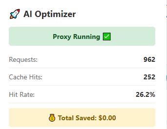

Why developers use it
Many developer workflows repeat the same model calls across scripts, tools, retries, local automations, and agent loops. AI Optimizer helps by caching repeated traffic locally and making that behavior easier to control.
AI Optimizer is built for developers running repeat-heavy tools, scripts, automations, and agent workflows that keep hitting the same API patterns over and over.
AI Optimizer helps developers reduce repeated OpenAI and Anthropic API waste by routing existing workflows through a local caching proxy on localhost. It works best for scripts, tools, automations, and agent loops that repeat the same request patterns over time.

Many developer workflows repeat the same model calls across scripts, tools, retries, local automations, and agent loops. AI Optimizer helps by caching repeated traffic locally and making that behavior easier to control.
You usually do not need to redesign your workflow. In many cases, the practical change is routing your base URL through the local optimizer endpoint on http://localhost:3000/v1.
AI Optimizer works well with repeat-heavy agent-style workflows, local assistants, scripts, and recurring jobs where the same API paths are revisited constantly.
AI Optimizer now supports both OpenAI and Anthropic with one active provider at a time. OpenAI support remains broader, while Anthropic support in this release is focused on chat completions.
For many tools and scripts, the main setup change is routing traffic through AI Optimizer locally:
OPENAI_BASE_URL=http://localhost:3000/v1AI Optimizer includes an adjustable cache TTL, which is especially useful for cron jobs, recurring automations, and repeat-heavy local workflows where the same request pattern shows up on a predictable schedule.
AI Optimizer is designed to fit into real local workflows, not just polished demos. The strongest current examples remain repeat-heavy OpenAI toolchains, while Anthropic support in v2.2.0 expands the same local proxy model.
AI Optimizer works well with local OpenClaw workflows where repeated API usage, memory flows, and agent-style tasks can create duplicate or recurring request patterns.
"models": {
"providers": {
"openai": {
"baseUrl": "http://localhost:3000/v1"
}
}
}If your Hermes workflow repeatedly calls the same models through local scripts or tools, AI Optimizer can help reduce waste without forcing you to rebuild the surrounding workflow.
Select provider: Custom endpoint
API base URL: http://localhost:3000/v1
API key: your OpenAI API key
Model: gpt-5.4
Start chat: hermes --tuiUse AI Optimizer as a local drop-in layer for the scripts, tools, agents, and command-line flows you already run.